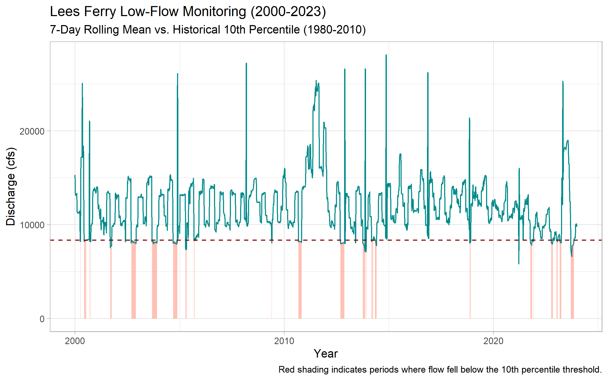
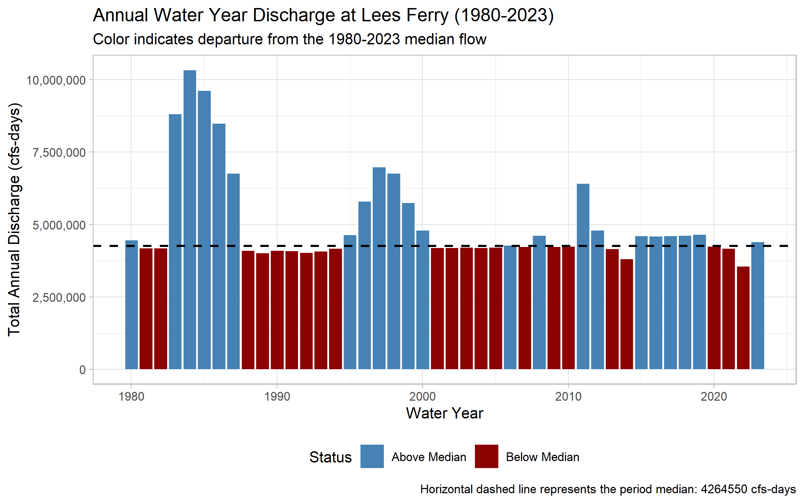
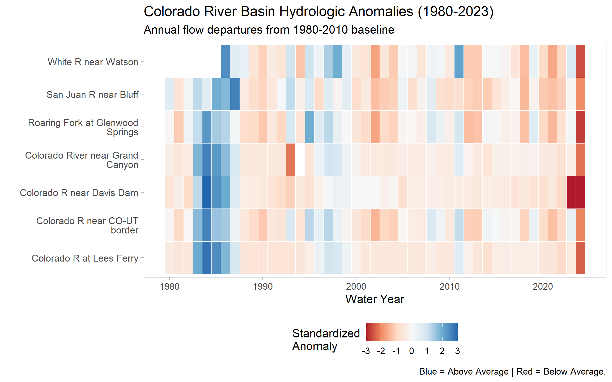
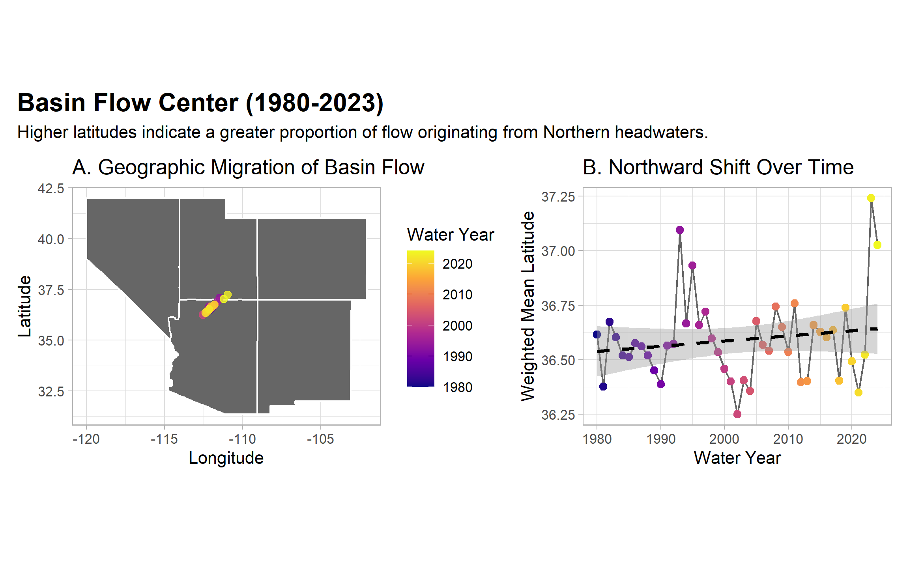
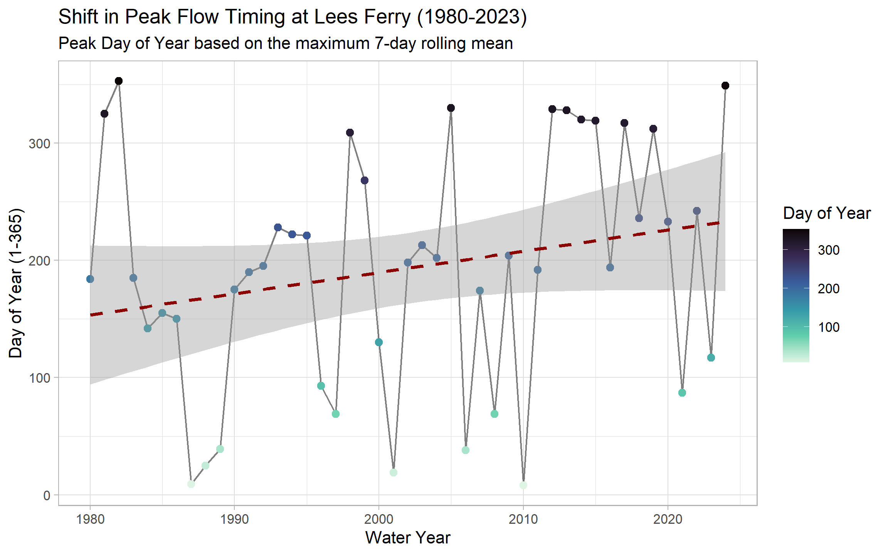
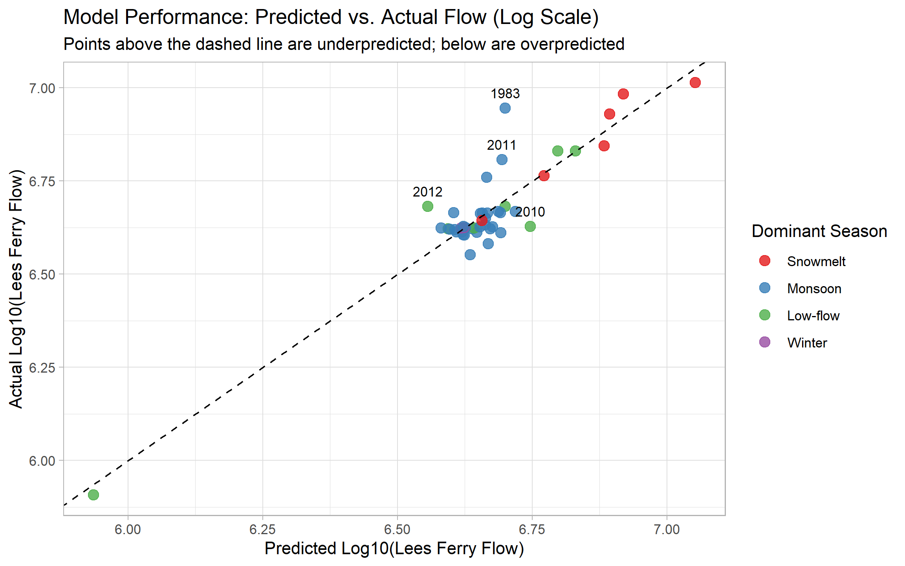
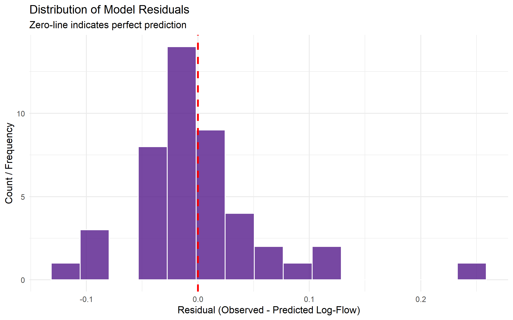

Lab 1: Data Science Tools
Exploring Streamflow Across the Colorado River Basin
In January 2023, the federal government announced the first-ever Tier 3 shortage on the Colorado River — triggering mandatory cuts to Arizona, Nevada, and Mexico. Those cuts were calculated from streamflow records like the ones you are about to pull.
The Colorado River Basin supplies drinking water to 40 million people across 7 US states, irrigates 5 million acres of farmland, and is governed by one of the oldest and most contested water rights agreements in American history — the Colorado River Compact of 1922. Understanding how streamflow varies across this system is not an academic exercise. It is the daily work of water managers, federal agencies, tribal water rights holders, and scientists navigating a river under compounding stress from drought, overallocation, and climate change.
In this lab you will work with real streamflow records pulled directly from the USGS National Water Information System (NWIS) — the same federal system water managers query every morning. You will build a complete analytical pipeline: from raw API call to normalized comparisons, threshold detection, basin-wide trend visualization, and a predictive model of the Compact’s key accounting point.
Set-up
Repository
- Create a new repository called
csu-523con GitHub - Clone it to your
~/github/directory - Open the project in RStudio (
File → Open Project) - Download this labs qmd file here into your repo
- Add your information to the yaml
---
...
author:
- name: Your Name
email: your@colostate.edu
...
---Libraries
Install and load the following packages. If any are missing, run install.packages("packagename") first:
Code
if (!requireNamespace("pacman", quietly = TRUE)) install.packages("pacman")
pacman::p_load(
tidyverse,
dataRetrieval,
zoo,
patchwork,
flextable,
lubridate,
broom
)
Note
pacman::p_load() installs any missing packages and loads them in one step — convenient for students setting up dependencies.
Data
We will use the dataRetrieval package — developed and maintained by the USGS — to pull 44 years of daily mean discharge from 7 long-record gauges spanning the Colorado River’s main stem and major tributaries.
The USGS parameter code for discharge is 00060 (cubic feet per second). The statistic code 00003 is the daily mean value. Under the hood, dataRetrieval constructs and queries the same REST API URL we explored in lecture:
https://waterservices.usgs.gov/nwis/dv/?sites=09380000¶meterCd=00060&statCd=00003The data can be grabbed below!
Code
gauges <- tribble(
~site_no, ~name, ~state,
"09380000", "Colorado R at Lees Ferry", "AZ",
"09163500", "Colorado R near CO-UT border", "CO",
"09085000", "Roaring Fork at Glenwood Springs","CO",
"09306500", "White R near Watson", "UT",
"09379500", "San Juan R near Bluff", "UT",
"09402500", "Colorado River near Grand Canyon","AZ",
"09423000", "Colorado R near Davis Dam", "NV"
)
raw <- readNWISdv(
siteNumbers = gauges$site_no,
parameterCd = "00060",
startDate = "1980-01-01",
endDate = "2023-12-31"
) |>
renameNWISColumns() |> # renames X_00060_00003 → Flow
left_join(gauges, by = "site_no") |>
select(site_no, name, state, Date, Flow)
glimpse(raw)Rows: 109,425
Columns: 5
$ site_no <chr> "09085000", "09085000", "09085000", "09085000", "09085000", "0…
$ name <chr> "Roaring Fork at Glenwood Springs", "Roaring Fork at Glenwood …
$ state <chr> "CO", "CO", "CO", "CO", "CO", "CO", "CO", "CO", "CO", "CO", "C…
$ Date <date> 1980-01-01, 1980-01-02, 1980-01-03, 1980-01-04, 1980-01-05, 1…
$ Flow <dbl> 620, 605, 582, 582, 575, 590, 582, 582, 582, 590, 560, 598, 59…Note: this chunk is cached (cache = TRUE). If you change the data-pull arguments and need fresh data, set cache = FALSE temporarily or delete the _cache/ directory and re-render to force a new download.
TipWhat does
glimpse() tell you?
Before doing anything with a new dataset, always check: Does the row count make sense? Are data types correct (Date should be <date>, Flow should be <dbl>)? Are there obvious NAs or impossible values? For ~7 gauges × 44 years × 365 days you should expect roughly 112,000 rows.
Question 1: Daily Conditions Report
You are a water resources analyst. Each morning you deliver a reproducible snapshot of current conditions to Colorado River Compact stakeholders. The analysis must be re-runnable on any date with a single change — that requires building it around parameter objects rather than hardcoded values.
a. Create a my.date parameter object set to the last day of water year 2023 (September 30, 2023). Ensure it is stored as a proper Date object, not a character string.
Tip
as.Date() converts a character string to a Date. R stores dates internally as days since 1970-01-01, enabling date arithmetic (my.date - 7 = one week earlier) and use in filter() comparisons. Hint: use as.Date() to convert strings to Date objects and confirm with class() before using date arithmetic or filter().
Code
my.date <- as.Date("2023-09-30")b. Compute the day-over-day change in discharge for each gauge — how much flow rose or fell compared to the previous day. Store this as a new column called flow_delta. This tells you whether conditions are improving or deteriorating, which is often more actionable than the raw level alone.
Code
daily_report <- raw %>%
arrange(site_no, Date) %>%
group_by(site_no) %>%
mutate(flow_delta = Flow - lag(Flow, n = 1)) %>%
ungroup()c. Filter to my.date and produce two formatted tables using flextable:
- Table 1: The 5 gauges with the highest discharge — where is flow greatest right now?
- Table 2: The 5 gauges with the greatest day-over-day increase — where is flow rising fastest?
Both tables should have clear column names, rounded numbers, and descriptive captions using flextable (see tip).
TipIntroducing
flextable
flextable creates publication-quality HTML tables directly from data frames.
Hint: use flextable() with set_header_labels(), set_caption(), and autofit() for clean tables. Use slice_max() to select top n rows and round() to tidy numeric columns before rendering.
Code
daily_delta <- daily_report %>%
filter(Date == my.date) %>%
mutate(across(c(Flow,flow_delta), round, 2))
#Table 1: 5 gauges with the highest discharge
high_flow_table <- daily_delta %>%
slice_max(order_by = Flow, n = 5) %>%
select(name, Flow, flow_delta) %>%
flextable() %>%
set_header_labels(
name = "Gauge Station",
Flow = "Discharge (cfs)",
flow_delta = "24hr Change (cfs)"
) %>%
set_caption(caption = paste("Top 5 Colorado River Gauges by Volume of Flow:", my.date)) %>%
autofit()
high_flow_tableGauge Station | Discharge (cfs) | 24hr Change (cfs) |
|---|---|---|
Colorado River near Grand Canyon | 6,950 | -20 |
Colorado R at Lees Ferry | 6,570 | -10 |
Colorado R near CO-UT border | 3,470 | -50 |
San Juan R near Bluff | 680 | -143 |
Roaring Fork at Glenwood Springs | 533 | 8 |
Code
#Table 2: 5 gauges with the greatest day-over-day increase
changing_flow_table <- daily_delta %>%
slice_max(order_by = flow_delta, n = 5) %>%
select(name, flow_delta, Flow) %>%
flextable() %>%
set_header_labels(
name = "Gauge Station",
Flow = "Discharge (cfs)",
flow_delta = "24hr Change (cfs)"
) %>%
set_caption(caption = paste("Top 5 Colorado River Gauges by Change in Volume of Flow :", my.date)) %>%
autofit()
changing_flow_tableGauge Station | 24hr Change (cfs) | Discharge (cfs) |
|---|---|---|
Roaring Fork at Glenwood Springs | 8 | 533 |
White R near Watson | -7 | 329 |
Colorado R at Lees Ferry | -10 | 6,570 |
Colorado River near Grand Canyon | -20 | 6,950 |
Colorado R near CO-UT border | -50 | 3,470 |
Question 2: Basin Metadata Join
Raw discharge numbers alone don’t tell the full story. Lees Ferry always carries more water than the San Juan at Bluff — but that is largely because it drains over 111,000 square miles versus the San Juan’s ~23,000. To compare these sites meaningfully, we need each gauge’s drainage area. That information lives in a separate table and must be joined in.
This is the core relational data problem: observations in one table, attributes in another, connected through a shared key. It is also one of the most error-prone operations in data science — not because the syntax is hard, but because bad joins fail silently.
The anatomy of a join
Before writing a single _join() call, answer three questions:
- What is the key? Which column(s) connect the two tables?
- What is the relationship? One-to-one, or one-to-many?
- What happens to non-matching rows? Keep them (with NAs), or drop them?
TipThe (main) four joins — and when to use each
| Function | Keeps rows from… | Non-matching rows |
|---|---|---|
left_join(x, y) |
All of x |
y columns filled with NA |
right_join(x, y) |
All of y |
x columns filled with NA |
inner_join(x, y) |
Only rows matching in both | Dropped entirely |
full_join(x, y) |
Both x and y |
NAs on whichever side has no match |
The most common mistake: using inner_join when you meant left_join. An inner join silently drops every row from x that has no match in y — your dataset shrinks and you may not notice until downstream results are wrong.
The second most common mistake: joining on a key that is not unique in one of the tables. If site_no appears twice in site_meta, every matching row in your flow data will be duplicated — your dataset grows and you may not notice.
Both failures are invisible without explicit verification. For graduate-level work, in your write-up briefly justify the join type you chose, quantify any unmatched keys or duplicates you observed, and discuss possible data provenance reasons for mismatches.
a. Pull site metadata for all 7 gauges. Before joining, verify that site_no is actually unique in site_meta — a duplicated key will silently inflate your row count.
Code
site_meta <- readNWISsite(gauges$site_no) |>
select(
site_no,
drain_area_va, # drainage area in square miles
huc_cd, # 8-digit HUC watershed code
dec_lat_va, # latitude
dec_long_va # longitude
)
# Is site_no actually unique? If any row shows n > 1, the join will duplicate rows
site_meta |> count(site_no) |> filter(n > 1)[1] site_no n
<0 rows> (or 0-length row.names)
TipKeys: primary and foreign
A primary key uniquely identifies each row in its own table. site_no in site_meta is a primary key — exactly one row per gauge.
A foreign key appears in another table to link observations back. site_no in your flow data is a foreign key — it appears thousands of times (once per day per gauge) and connects each observation to its gauge’s metadata.
The join matches on this shared key. Because one gauge has many flow records, this is a one-to-many relationship — one site_meta row fans out to match thousands of flow rows.
b. Join site_meta to your flow data using site_no as the key. Use the join type that keeps all flow records regardless of whether metadata is available.
Code
# Join the metadata to the flow data
joined_meta_data <- left_join(daily_report, site_meta, by = "site_no")
#verify row counts
nrow(joined_meta_data) == nrow(daily_report)[1] TRUECode
#verify NAs
metadata_cols <- c("drain_area_va", "huc_cd", "dec_lat_va", "dec_long_va")
sum(is.na(joined_meta_data[metadata_cols])) == 0[1] TRUECode
#Spot check
spot_check <- joined_meta_data %>%
filter(site_no == "09380000") %>% # Colrado River at Lee's Ferry AZ
select(site_no, site_no, drain_area_va) %>%
distinct()c. Verify the join — this step is not optional:
ImportantAlways verify your joins — three checks, every time
nrow(result) == nrow(left_table)— row count unchanged ✓sum(is.na(new_column)) == 0— no unexpected NAs ✓- Spot-check a known value — numbers are plausible ✓
These checks cost 30 seconds and catch errors that would otherwise corrupt every downstream calculation silently. You will join data in every lab this semester. Consider, building this habit now.
Graduate expectations
This course is at the graduate level. In addition to producing correct code and outputs, your submission should:
- Briefly justify methodological choices (e.g., window lengths, alignment for rolling statistics, normalization approaches, and model structure). A short 3–5 sentence justification is sufficient.
- Include a simple sensitivity or validation check where appropriate (e.g., compare 7-day vs 14-day rolling windows; use leave-one-year-out cross-validation for the predictive model and report RMSE or MAE).
- Report basic uncertainty/robustness: how sensitive are your central conclusions to small changes in preprocessing or parameter choices?
- Cite one relevant source (paper, USGS stat documentation, or authoritative report) if you reference an established hydrological statistic (e.g., 7Q10 logic) or external dataset.
Question 3: Per-Unit-Area Normalization
Lees Ferry’s high discharge reflects its enormous watershed, not necessarily more intense rainfall or runoff. To compare runoff intensity across sites with different drainage areas, we normalize by expressing flow per unit area: cfs per square mile.
a. Add a flow_per_sqmi column to your data.frame.
Code
runoff_df <- joined_meta_data %>%
mutate(flow_per_sqmi = Flow / drain_area_va)b. On my.date, build a flextable showing both raw and normalized rankings side by side for all 7 gauges. Include columns for gauge name, raw discharge (cfs), drainage area (mi²), normalized flow (cfs/mi²), raw rank, and normalized rank. Sort by raw rank.
Code
ranking_data <- runoff_df %>%
filter(Date == my.date) %>%
select(name, Flow, drain_area_va, flow_per_sqmi) %>%
mutate(raw_rank = rank(-Flow),
norm_rank = rank(-flow_per_sqmi)) %>%
arrange(raw_rank) %>%
flextable() %>%
set_header_labels(
name = "Gauge Station",
Flow = "Raw Discharge (cfs)",
drain_area_va = "Drainage Area (sqmi)",
flow_per_sqmi = "Normalized Flow (cfs/sqmi)",
raw_rank = "Raw Rank",
norm_rank = "Normalized Rank"
) %>%
set_caption(caption = paste("Comparative Basin Rankings: Raw Discharge vs Normalized Area Discharge on ", my.date)) %>%
autofit()
ranking_dataGauge Station | Raw Discharge (cfs) | Drainage Area (sqmi) | Normalized Flow (cfs/sqmi) | Raw Rank | Normalized Rank |
|---|---|---|---|---|---|
Colorado River near Grand Canyon | 6,950 | 141,600 | 0.04908192 | 1 | 5 |
Colorado R at Lees Ferry | 6,570 | 111,800 | 0.05876565 | 2 | 4 |
Colorado R near CO-UT border | 3,470 | 17,849 | 0.19440865 | 3 | 2 |
San Juan R near Bluff | 680 | 23,000 | 0.02956522 | 4 | 6 |
Roaring Fork at Glenwood Springs | 533 | 1,453 | 0.36682725 | 5 | 1 |
White R near Watson | 329 | 4,020 | 0.08184080 | 6 | 3 |
Colorado R near Davis Dam | 173,300 | 7 | 7 |
c. Answer in 2–3 sentences: (1) do the raw and normalized rankings differ, and if so, which gauge changes most dramatically? (2) Why does per-area normalization matter for comparing gauges in the Colorado Basin? (3) Name one analysis where you would use raw discharge and one where you would use normalized discharge.
…
(1) The raw and normalized rankings differ significantly, with the Colorado River at Glenwood Springs showing the most dramatic change, jumping from the 5th highest in raw discharge to the 1st in normalized flow. (2) Per-area normalization is essential because it accounts for the vast differences in drainage basin size, allowing you to identify which areas are most hydrologically productive (yielding the most water per square mile) regardless of their total volume. (3) You would use raw discharge for managing downstream reservoir storage or infrastructure capacity, whereas normalized discharge is better for comparing the runoff efficiency or land-use impacts of different sub-basins.
Question 4: Low-Flow Threshold Monitoring
Drought managers don’t just watch absolute flow levels — they watch how current conditions compare to historical norms. The standard operational metric is the 7Q10: the lowest 7-day average flow expected to occur once in 10 years. We’ll use a related approach: flag when the 7-day rolling mean falls below the historical 10th percentile.
Note
The USGS computes official low-flow statistics — including the 7Q10 — and makes them accessible via dataRetrieval::readNWISstat(). The thresholds you compute here will closely approximate those official values and follow the same logic water rights lawyers and regulators actually use.
a. For each gauge, compute the 7-day rolling mean of daily discharge. Use zoo::rollmean() with fill = NA and align = "right" so each value represents the average of the current and 6 preceding days. If you havent see this function before, check out the documentation (?rollmean) and examples to understand how it works.
Code
# 7 day rolling mean
rolling_df <- runoff_df %>%
group_by(site_no) %>%
arrange(Date) %>%
mutate(
q7_mean = rollmean(Flow, k = 7, fill = NA, align = "right")
) %>%
ungroup()b. Define a low-flow threshold for each gauge as the 10th percentile of its historical discharge during 1980–2010. A flow that is critically low for Lees Ferry might be above average for the Little Colorado — thresholds must be site-specific.
Code
#Historical baseline for water year
low_flow_thresholds <- rolling_df %>%
filter(Date >= as.Date("1980-10-01") & Date <= as.Date("2010-09-30")) %>%
group_by(site_no) %>%
summarise(
#Compute threshhold
q10_threshold = quantile(Flow,probs = 0.10, na.rm = TRUE)
)
#Join thresholds back to main df
rolling_df <- rolling_df %>%
left_join(low_flow_thresholds, by = "site_no")
#Quick validation check
unique(rolling_df$q10_threshold)[1] 425 2570 621 8350 8850 7830 250c. Add a logical column below_threshold that is TRUE when the 7-day rolling mean is below the gauge’s 10th percentile threshold.
Code
#logical alert column
rolling_df <- rolling_df %>%
mutate(
below_threshold = q7_mean < q10_threshold
)d. For Lees Ferry (site 09380000) — the Compact’s primary accounting point — plot the 7-day rolling mean from 2000–2023 using ggplot. Shade periods below threshold in red and add a dashed horizontal reference line at the threshold.
Code
#Filter
lees_plot <- rolling_df %>%
filter(site_no == "09380000") %>%
filter(Date >= as.Date("2000-01-01") & Date <= as.Date("2023-12-31"))
#Plot
ggplot(lees_plot, aes(x = Date, y = q7_mean)) +
geom_line(color = "cyan4") +
geom_ribbon(aes(ymin = 0, ymax = ifelse(below_threshold, q7_mean, NA)),
fill = "tomato", alpha = 0.4) +
geom_hline(aes(yintercept = q10_threshold),
linetype = "dashed", color = "darkred") +
labs(
title = "Lees Ferry Low-Flow Monitoring (2000-2023)",
subtitle = "7-Day Rolling Mean vs. Historical 10th Percentile (1980-2010)",
x = "Year",
y = "Discharge (cfs)",
caption = "Red shading indicates periods where flow fell below the 10th percentile threshold."
) +
theme_light() 
e. How many days per year, on average, did Lees Ferry fall below its low-flow threshold in 2000–2010 vs. 2011–2023? Produce a small summary table and answer in 2–3 sentences: (1) did below-threshold days increase or decrease? (2) Is this a shift in isolated dry years or a persistent baseline change? (3) What does this imply for Compact delivery obligations?
Tip
n_distinct(year(Date)) counts unique years in a group — useful for computing per-year averages across a multi-year period.
Code
#Calculate average days below threshold for two time periods
period_comparison <- rolling_df %>%
filter(site_no == "09380000") %>%
mutate(period = case_when(
Date >= as.Date("2000-01-01") & Date <= as.Date("2010-12-31") ~ "2000-2010",
Date >= as.Date("2011-01-01") & Date <= as.Date("2023-12-31") ~ "2011-2023",
TRUE ~ NA_character_
)) %>%
filter(!is.na(period)) %>%
group_by(period) %>%
summarise(
total_days_below = sum(below_threshold, na.rm = TRUE),
unique_years = n_distinct(year(Date)),
avg_days_per_year = round(total_days_below / unique_years, 1)
)
#Summary table
period_comparison %>%
flextable() %>%
set_header_labels(
period = "Time Period",
total_days_below = "Total Days < 10th%",
unique_years = "Number of Years",
avg_days_per_year = "Avg Days/Year"
) %>%
set_caption("Lees Ferry: Changes in Frequency of Low-Flow Threshold Breaches") %>%
autofit()Time Period | Total Days < 10th% | Number of Years | Avg Days/Year |
|---|---|---|---|
2000-2010 | 412 | 11 | 37.5 |
2011-2023 | 366 | 13 | 28.2 |
…
- The frequency of below-threshold days has surprisingly decreased in the 2011-2023 period compared to the initial decade. From the table we can see that the 2000-2010 period had on average almost 9 more days below the 10th percentile of its historical normal.
- This suggests the first window had more frequent sustained extreme lows than the 2011-2023 period. This could be attributed to more aggressive management of Lake Powell release.
- For Colorado River Compact obligations, this implies that while the risk remains high, the Upper Basin has successfully managed to avoid a higher frequency of “critical low” days at the primary accounting point in recent years. However, if this decrease in low-flow frequency is being achieved by drawing down reservoir storage (Lake Powell), the system is trading short-term flow stability for long-term storage depletion.
Question 5: Annual Water Year Summary
Calendar years are a poor fit for western US hydrology. The water year (October 1 – September 30) captures the full snowmelt cycle: snowpack accumulates through winter, melts in spring, and by September the basin has recharged or drawn down for the year. Water year 2023 = October 1, 2022 through September 30, 2023.
a. Add water_year and month columns to your dataset. The water year is the calendar year of the ending September 30 — months October through December belong to the next water year.
Note
Use if_else() to set water_year for Oct–Dec months.
b. For each gauge and water year, compute: total annual discharge, peak daily discharge, and number of days below the low-flow threshold.
Code
#Add month and water year if month is > 10 belongs to next year
river_full <- rolling_df %>%
mutate(
month = month(Date),
water_year = if_else(month >= 10, year(Date) + 1, year(Date))
)
wy_summary <- river_full %>%
group_by(site_no, name, water_year) %>%
summarise(
total_annual_discharge = sum(Flow, na.rm = TRUE),
peak_daily_discharge = max(Flow, na.rm = TRUE),
days_below_threshold = sum(below_threshold, na.rm = TRUE)
) %>%
ungroup()c. Plot total annual discharge at Lees Ferry by water year (1980–2023) as a bar chart. Color bars above the long-term median blue and bars below it red. Add a dashed horizontal reference line at the median.
Tip
Hint: compute the long-term median and color bars by whether each year’s total is above or below it; add a dashed horizontal line at the median for reference.
Code
#Filter for Lee's Ferry and time period
lees_annual_plot <- wy_summary %>%
filter(site_no == "09380000") %>%
filter(water_year >= 1980 & water_year <= 2023)
#mutate(water_year = as.numeric(as.character(water_year)))
#Calculate long term median and add status column
lt_median <- median(lees_annual_plot$total_annual_discharge, na.rm = TRUE)
lees_annual_plot <- lees_annual_plot %>%
mutate(
status = if_else(total_annual_discharge >= lt_median, "Above Median", "Below Median"))
#Plot
ggplot(
lees_annual_plot, aes(x = water_year, y = total_annual_discharge, fill = status)) +
geom_col(color = "white", linewidth = 0.1) +
#reference line
geom_hline(
yintercept = lt_median, linetype = "dashed", color = "black", linewidth = 0.8) +
scale_fill_manual(
values = c("Above Median" = "steelblue", "Below Median" = "red4")) +
labs(
title = "Annual Water Year Discharge at Lees Ferry (1980-2023)",
subtitle = "Color indicates departure from the 1980-2023 median flow",
x = "Water Year",
y = "Total Annual Discharge (cfs-days)",
fill = "Status",
caption = paste("Horizontal dashed line represents the period median:", round(lt_median, 0), "cfs-days")
) +
theme_light() +
scale_y_continuous(labels = scales::comma) +
theme(legend.position = "bottom")
In 2–3 sentences: (1) describe the direction and approximate timing of any structural shift in the record, (2) identify one year that stands out as an exception to the dominant pattern and what you know about its cause, and (3) explain what this pattern means for Compact water accounting.
…
- From the plot we can see that there is a clear structural shift from a high-variability pattern with frequent wet years in the early to mid 1980s and late 1990s to a much more compressed, consistently dry pattern starting around water year 2000. While the early half of the record features massive discharge peaks exceeding 10 million cfs, the post 2000 era is dominated by years that rarely cross the median.
- Water year 2011 stands out as a significant exception to the modern dry pattern as the total annual discharge spikes up to look more like the pre 2000 levels. This spike was likely caused by an exceptionally heavy winter snow pack that year and a rapid spring melt forcing more releases from Glen Canyon Dam.
- For Compact water accounting, this persistent pattern of below median flows creates a structural deficit where the upper basin must increasingly rely on these rare high flow years to maintain the delivery requirements to the Lower Basin states.
Question 6: Basin-Wide Trend Analysis
A single gauge tells you about one location. To understand whether drought is consistent across the entire basin — or whether some tributaries are diverging from the main stem — you need to compare all gauges simultaneously on the same scale.
Raw discharge can’t serve this purpose: a large-watershed gauge will always dominate. The solution is a standardized anomaly — each year’s flow expressed as standard deviations above or below the site’s own baseline mean:
\[\text{anomaly} = \frac{\bar{Q}_{year} - \bar{Q}_{baseline}}{\sigma_{baseline}}\]
where baseline = 1980–2010. An anomaly of –2 means “two standard deviations below normal for this gauge” — directly comparable to the same metric at any other gauge.
a. Compute the 1980–2010 baseline mean and SD per gauge. Join those stats back to the full annual data and compute the standardized anomaly for every gauge-year combination.
Tip
Hint: summarize baseline mean and SD per gauge (1980–2010), join those stats to the annual table, and compute the standardized anomaly as (total_flow − baseline_mean)/baseline_sd. This is a join you’ve seen twice now — verify row counts and NAs after the join.
Code
#Compute baseline mean and SD
baseline_stats <- wy_summary %>%
filter(water_year >= 1980 & water_year <= 2010) %>%
group_by(site_no) %>%
summarize(
baseline_mean = mean(total_annual_discharge, na.rm = TRUE),
baseline_sd = sd(total_annual_discharge, na.rm = TRUE)
) %>%
ungroup()
#Join stats back to annual table and compute anomaly
wy_summary_stats <- wy_summary %>%
left_join(baseline_stats, by = "site_no") %>%
mutate(
std_anomaly = (total_annual_discharge - baseline_mean) / baseline_sd
)
#verification checks
nrow(wy_summary) == nrow(wy_summary_stats) #Expect TRUE[1] TRUECode
colSums(is.na(wy_summary_stats)) #Expect 0s site_no name water_year
0 0 0
total_annual_discharge peak_daily_discharge days_below_threshold
0 0 0
baseline_mean baseline_sd std_anomaly
0 0 0 b. Visualize as a heatmap: water year on x, gauge name on y, fill = standardized anomaly. Use a diverging color scale centered at zero (blue = above average, red = below average).
Tip
geom_tile() draws one rectangle per gauge-year. For the color scale, use a diverging color scale centered at zero (e.g., RdBu), clamp extreme values with oob = scales::squish, and wrap long gauge names to keep labels readable.
Code
#Prepar data
heatmap_data <- wy_summary_stats %>%
mutate(station_wrapped = str_wrap(name, width = 25))
#Map
ggplot(heatmap_data, aes(x = water_year , y = station_wrapped, fill = std_anomaly)) +
geom_tile(color = "white", linewidth = 0.05) +
# Diverging scale: Red (Dry/Negative) to Blue (Wet/Positive)
scale_fill_distiller(
palette = "RdBu",
direction = 1,
limits = c(-3, 3),
oob = scales::squish,
name = "Standardized\nAnomaly"
) +
# Formatting
labs(
title = "Colorado River Basin Hydrologic Anomalies (1980-2023)",
subtitle = "Annual flow departures from 1980-2010 baseline",
x = "Water Year",
y = "",
caption = "Blue = Above Average | Red = Below Average."
) +
theme_light() +
theme(
axis.text.y = element_text(size = 9, lineheight = 0.8),
legend.position = "bottom",
panel.grid = element_blank()
)
c. In 3–4 sentences: (1) describe whether the post-2000 drought signal appears across all gauges or only some, (2) identify two specific years that appear as basin-wide anomalies — one dry, one wet — and name the climate event that caused each, and (3) explain what simultaneous basin-wide anomalies tell you that a single-gauge record cannot.
…
- The post 2000 drought signal is a consistent basin wide phenomenon, visible as a shift towards red hues across all gauges. while there are occasional neutral years the overarching patters is a shift towards more negative anomalies across the basin.
- Water Year 2002 stands out as a severe basin-wide dry anomaly, appearing as a vertical band of deep orange across almost every gauge due to record-low snowpack and an exceptionally dry spring. Conversely, Water Year 1983 or 1984 represents a basin-wide wet anomaly (dark blue), driven by a powerful strong El Niño event that delivered historic precipitation levels across the entire Southwest.
- Simultaneous basin-wide anomalies provide evidence of broad-scale climatic forces that a single-gauge record cannot confirm. While one gauge might show a dry year due to local factors like a wildfire or a specific dam operation, seeing the same red signal across the entire map proves the system is responding to a massive regional moisture deficit, which is critical for understanding the true scale of the structural deficit facing the Colorado River Compact.
Question 7: The Moving Center of Drought
You have been asked to understand how the geographic center of streamflow has shifted over time. If drought has disproportionately reduced flow in the southern tributaries, the flow-weighted center of the basin should drift north — proportionally more flow is coming from northern headwater gauges. In exceptional snowmelt years it should shift back.
We measure this with the flow-weighted mean position: each gauge’s coordinates are weighted by its fraction of total annual basin flow.
\[\bar{X}_{year} = \frac{\sum (lon_i \times Q_i)}{\sum Q_i} \qquad \bar{Y}_{year} = \frac{\sum (lat_i \times Q_i)}{\sum Q_i}\]
a. Join gauge coordinates (dec_lat_va, dec_long_va) from site_meta to your annual summary. Compute the flow-weighted mean latitude and longitude for each water year.
Tip
Hint: join coordinates from site_meta to the annual table, then compute weighted longitude/latitude per year as sum(coord * total_flow) / sum(total_flow). This is your third join — verify row counts, NAs, and spot-check known values.
Note: mapping can use map_data("state"); if map_data() is not available install the maps package (install.packages("maps")) or use ggplot2::map_data("state") which provides equivalent polygons.
Code
#Get Coordinates
coord_table <- site_meta %>%
select(site_no,dec_lat_va, dec_long_va)
#Join spacial data
wy_spatial <- wy_summary_stats %>%
left_join(site_meta, by = "site_no")
#Verification checks
nrow(wy_summary_stats) == nrow(wy_spatial) #Expect TRUE[1] TRUECode
colSums(is.na(wy_spatial)) #Expect 0s site_no name water_year
0 0 0
total_annual_discharge peak_daily_discharge days_below_threshold
0 0 0
baseline_mean baseline_sd std_anomaly
0 0 0
drain_area_va huc_cd dec_lat_va
0 0 0
dec_long_va
0 Code
#Spot Check for Lee's Ferry
wy_spatial %>%
filter(site_no == "09380000") %>% # Lees Ferry
select(name, dec_lat_va, dec_long_va) %>%
head(1) #Expect ~36.89lat & ~111.59long# A tibble: 1 × 3
name dec_lat_va dec_long_va
<chr> <dbl> <dbl>
1 Colorado R at Lees Ferry 36.9 -112.Code
#Compute flow weighted means
basin_center_shift <- wy_spatial %>%
group_by(water_year) %>%
summarise(
weighted_long = sum(dec_long_va * total_annual_discharge, na.rm = TRUE) /
sum(total_annual_discharge, na.rm = TRUE),
weighted_lat = sum(dec_lat_va * total_annual_discharge, na.rm = TRUE) /
sum(total_annual_discharge, na.rm = TRUE),
) %>%
ungroup()b. Create a two-panel figure using patchwork:
- Left: western US base map with the weighted center plotted as points colored by water year (blue = early, red = recent) and connected by a path through time
- Right: line plot of weighted mean latitude over time with a linear trend line
Tip
Hint: draw a western-US polygon basemap and overlay the annual weighted centers as a colored path and points; beside it, plot weighted latitude over time with a linear trend. Use a diverging color gradient for year progression and patchwork to combine panels.
If you haven’t seen patchwork before, it allows you to combine multiple ggplots into a single figure with simple syntax: plot1 + plot2 places them side by side; plot1 / plot2 stacks them vertically assuming the package is loaded.
Code
#Prepare Western US Base Map
west_map <- map_data("state") %>%
filter(region %in% c("arizona", "utah", "colorado", "nevada", "new mexico"))
#Left Panel: Spatial Map of the Flow-Weighted Center
plot_map <- ggplot() +
# Draw state boundaries
geom_polygon(data = west_map, aes(x = long, y = lat, group = group),
fill = "gray40", color = "white") +
# Draw the path of the center over time
geom_path(data = basin_center_shift, aes(x = weighted_long, y = weighted_lat),
color = "gray40", alpha = 0.5, linetype = "dotted") +
# Draw annual points colored by year
geom_point(data = basin_center_shift, aes(x = weighted_long, y = weighted_lat, color = water_year),
size = 2, alpha = 0.8) +
scale_color_viridis_c(option = "plasma", name = "Water Year") +
coord_fixed(1.3) +
theme_light() +
labs(title = "A. Geographic Migration of Basin Flow",
x = "Longitude", y = "Latitude")
#plot_map
#Right Panel: Latitudinal Trend Line
plot_trend <- ggplot(basin_center_shift, aes(x = water_year, y = weighted_lat)) +
geom_line(color = "gray40") +
geom_point(aes(color = water_year), size = 2) +
# Add the linear trend line
geom_smooth(method = "lm", color = "black", se = TRUE, linetype = "dashed") +
scale_color_viridis_c(option = "plasma") +
theme_light() +
guides(color = "none") + # Hide legend on the second plot to save space
labs(title = "B. Northward Shift Over Time",
x = "Water Year", y = "Weighted Mean Latitude")
#plot_trend
#Combine using Patchwork
final_plot <- plot_map + plot_trend +
plot_annotation(
title = "Basin Flow Center (1980-2023)",
subtitle = "Higher latitudes indicate a greater proportion of flow originating from Northern headwaters.",
theme = theme(plot.title = element_text(size = 16, face = "bold"))
)
final_plot
c. Your latitude time series should show two years where the weighted center spikes dramatically northward. Identify those two years and explain: (1) what climate event caused each spike, (2) what they have in common physically, and (3) what the long-term upward trend in weighted latitude suggests about which part of the basin is becoming proportionally more important to total flow — and why that matters for water managers downstream.
…
- The two dramatic northward spikes in weighted latitude occur in Water Year 1993 and Water Year 2023. Both spikes were caused by exceptionally heavy winters with record breaking snow pack in the upper basin states.
- Physically, these spikes represent Snow-Dominated Runoff Events. In both years, the basin’s was overwhelmed by high-altitude snowmelt rather than lower-altitude rain or monsoonal surges. This implies that during these years, the vast majority of the river’s volume is originating from the high-elevation Rockies, while the lower, more arid parts of the basin contribute negligible amounts to the total flow.
- The long-term upward trend indicates that the Upper Basin headwaters are becoming proportionally more important to the total flow of the Colorado River. This matters for downstream managers because they can no longer rely on southern surges to supplement reservoir levels as the southern tributaries dry out faster than the northern snow dependent rivers.
Question 8: Seasonal Regimes and Peak Timing
Annual totals mask important seasonal structure. The Colorado Basin has two distinct runoff pulses: a snowmelt surge in spring (April–June) driven by Rocky Mountain headwater snowpack, and a monsoon pulse in late summer (July–September) driven by convective storms across the Arizona-New Mexico plateau. These seasons respond differently to climate forcing — and under warming, the snowmelt season is arriving earlier.
a. Add a season column using case_when(). Roughly we will define the seasons as follows:
- Snowmelt: April–June (months 4–6)
- Monsoon: July–September (months 7–9)
- Low-flow: October–December (months 10–12)
- Winter: January–March (months 1–3)
Make season a factor with levels in hydrological order: Snowmelt, Monsoon, Low-flow, Winter.
Tip
Hint: extract month from Date with lubridate::month(), create season with case_when() mapping month ranges to labels, then convert to a factor with explicit level ordering:
Code
data |> mutate(
month = month(Date),
season = case_when(...),
season = factor(season, levels = c('Snowmelt', 'Monsoon', 'Low-flow', 'Winter'))
)Code
#Add seasons
river_full <- river_full %>%
mutate(
month = month(Date),
season = case_when(
month %in% 4:6 ~ "Snowmelt",
month %in% 7:9 ~ "Monsoon",
month %in% 10:12 ~ "Low-flow",
month %in% 1:3 ~ "Winter"),
season = factor(season, levels = c('Snowmelt', 'Monsoon', 'Low-flow', 'Winter'
))
)b. Group by gauge, water year, and season. Summarize total seasonal discharge and normalized runoff per group.
Code
#Calculate seasonal discharge
season_data <- river_full %>%
group_by(site_no, water_year,season) %>%
summarise(
seasonal_discharge = sum(Flow, na.rm = TRUE)
) %>%
ungroup()
#Normalized runoff
season_data <- season_data %>%
group_by(site_no, water_year) %>%
mutate(
annual_total = sum(seasonal_discharge, na.rm = TRUE),
normalized_runoff = seasonal_discharge / annual_total
) %>%
ungroup()c. For each gauge and water year, identify the date of peak 7-day mean flow and convert it to day-of-year. Plot peak day-of-year vs. water year for Lees Ferry with a linear trend line.
Tip
slice_max(roll7, n = 1, with_ties = FALSE) inside a group_by(site_no, water_year) block selects the single highest 7-day mean row per gauge per year. Then lubridate::yday(Date) converts to day-of-year (1–365).
Code
#Identify the date of the peak 7-day mean per gauge/year
peak_timing <- river_full %>%
group_by(site_no, name, water_year) %>%
# Select the single row with the highest 7-day mean
slice_max(q7_mean, n = 1, with_ties = FALSE) %>%
mutate(peak_doy = yday(Date)) %>%
ungroup()
#Filter for Lees Ferry
lees_peak <- peak_timing %>%
filter(site_no == "09380000")
#Plot
ggplot(lees_peak, aes(x = water_year , y = peak_doy)) +
geom_line(color = "black", alpha = 0.5) +
geom_point(aes(color = peak_doy), size = 2) +
geom_smooth(method = "lm", color = "darkred", linetype = "dashed", se = TRUE) +
scale_color_viridis_c(option = "mako", direction = -1, name = "Day of Year") +
theme_light() +
labs(
title = "Shift in Peak Flow Timing at Lees Ferry (1980-2023)",
subtitle = "Peak Day of Year based on the maximum 7-day rolling mean",
x = "Water Year",
y = "Day of Year (1-365)"
)
d. In 2–3 sentences: (1) describe the direction and magnitude of the peak timing trend, (2) is it statistically visible or buried in noise? (3) What would a two-week earlier peak timing mean operationally for reservoir managers trying to capture spring runoff before it passes downstream?
…
- The peak timing trends at Lee’s Ferry shows a slight positive shift meaning peak flows are arriving later in the year.
- However, this trend is largely buried in noise as there is high variability at the extremes.
- Operationally, if the peak were to shift two weeks earlier, reservoir managers would face a capture-release conflict: they would be forced to catch the runoff while reservoir levels are still high from winter, potentially exceeding storage capacity and requiring bypass releases that send valuable water downstream before the high-demand summer irrigation season begins.
Question 9: Predicting Lees Ferry from Upstream Conditions
Lees Ferry is the Compact’s accounting point — the location where upper basin states must deliver flow to lower basin states. Predicting annual discharge at Lees Ferry from upstream conditions has direct operational value: managers can begin planning deliveries months before the water arrives.
We’ll build a simple but physically grounded model: can Glenwood Springs (an upper Rocky Mountain gauge) predict Lees Ferry annual flow, and, does that relationship change by season?
Data Preparation
a. Build your model dataset through four sequential operations:
- Filter
annualto Lees Ferry; renametotal_flowtolees_flow - Join annual Glenwood Springs flow (site
09085000); rename toglenwood_flow - Join the dominant season at Lees Ferry per water year, the season with the highest total discharge
- Log-transform both flow variables
Tip
The dominant season: within each water year, which season (Snowmelt, Monsoon, Low-flow, Winter) carried the most flow at Lees Ferry? Filter seasonal summaries to Lees Ferry, then group_by(water_year) |> slice_max(total_flow, n = 1) to select one season per year.
Then join that back to your Lees Ferry & Glenwood annual table by water_year.
This is your fourth join. Always verify: the final dataset should have ~44 rows (one per water year, 1980–2023), zero NAs in flow columns, and log-transformed values should be positive.
Code
#Isolate Lees Ferry (The Response Variable)
lees_annual <- wy_summary %>%
filter(site_no == "09380000") %>%
select(water_year, lees_flow = total_annual_discharge)
#Isolate Glenwood Springs (The Predictor Variable)
glenwood_annual <- wy_summary %>%
filter(site_no == "09085000") %>%
select(water_year, glenwood_flow = total_annual_discharge)
#Identify dominant season at Lee's Ferry
dominate_season <- season_data %>%
filter(site_no == "09380000") %>%
group_by(water_year) %>%
slice_max(seasonal_discharge, n = 1, with_ties = FALSE) %>%
select(water_year, dom_season = season)
#Final Join and Log-Transformation
model_data <- lees_annual %>%
inner_join(glenwood_annual, by = "water_year") %>%
inner_join(dominate_season, by = "water_year") %>%
mutate(
log_lees = log10(lees_flow),
log_glenwood = log10(glenwood_flow)
)
#Verification checks
nrow(lees_annual) == nrow(dominate_season) & nrow(model_data) # Expect TRUE[1] TRUECode
sum(is.na(model_data$log_lees)) # Expect 0 NAs[1] 0Code
model_data$lees_flow > 0 # Expect TRUE [1] TRUE TRUE TRUE TRUE TRUE TRUE TRUE TRUE TRUE TRUE TRUE TRUE TRUE TRUE TRUE
[16] TRUE TRUE TRUE TRUE TRUE TRUE TRUE TRUE TRUE TRUE TRUE TRUE TRUE TRUE TRUE
[31] TRUE TRUE TRUE TRUE TRUE TRUE TRUE TRUE TRUE TRUE TRUE TRUE TRUE TRUE TRUEModel Building
b. Fit a linear model predicting log_lees from log_glenwood, season, and their interaction, If you haven’t seen linear modeling in R, we will cover it in more detail latter in this course, but, the syntax is straightforward: lm(response ~ predictor1 * predictor2, data = mydata) fits a model with main effects and an interaction term. The interaction (*) allows the relationship between Glenwood and Lees to differ by season while a model without interaction (lm(log_lees ~ log_glenwood + season)) would assume the same Glenwood-Lees relationship in every season.
Code
mod <- lm(log_lees ~ log_glenwood * season, data = lees_model_data)
summary(mod)Code
model_output <- lm(log_lees ~ log_glenwood * dom_season, data = model_data)
summary(model_output)
Call:
lm(formula = log_lees ~ log_glenwood * dom_season, data = model_data)
Residuals:
Min 1Q Median 3Q Max
-0.118641 -0.028983 -0.008011 0.013435 0.245776
Coefficients:
Estimate Std. Error t value Pr(>|t|)
(Intercept) -3.5226 2.2903 -1.538 0.132543
log_glenwood 1.7973 0.3963 4.535 5.87e-05 ***
dom_seasonMonsoon 8.7674 2.3484 3.733 0.000634 ***
dom_seasonLow-flow 5.2886 2.3299 2.270 0.029133 *
dom_seasonWinter 9.9918 3.6732 2.720 0.009880 **
log_glenwood:dom_seasonMonsoon -1.5456 0.4071 -3.797 0.000527 ***
log_glenwood:dom_seasonLow-flow -0.9088 0.4040 -2.249 0.030527 *
log_glenwood:dom_seasonWinter -1.7699 0.6533 -2.709 0.010156 *
---
Signif. codes: 0 '***' 0.001 '**' 0.01 '*' 0.05 '.' 0.1 ' ' 1
Residual standard error: 0.06664 on 37 degrees of freedom
Multiple R-squared: 0.8554, Adjusted R-squared: 0.828
F-statistic: 31.27 on 7 and 37 DF, p-value: 1.116e-13c. In 3–4 sentences: (1) report the R² and state whether the overall model is statistically significant, (2) interpret the log_glenwood coefficient as an elasticity — what does it mean physically that the coefficient is greater than 1? (3) describe what the significant negative interaction terms tell you about the upstream-downstream relationship outside of Snowmelt season.
Tip
In a log-log model, the coefficient on log_glenwood is an elasticity: a coefficient of 1.8 means a 1% increase in Glenwood Springs flow is associated with a 1.8% increase at Lees Ferry. This super-linear amplification makes physical sense — flow accumulates from tributaries between the two gauges, so an above-average headwater year compounds as it moves downstream.
…
The regression model yields a Multiple \(R^2\) of 0.8554, indicating that approximately 86% of the variance in annual flow at Lees Ferry is explained by the combination of Glenwood Springs discharge and the dominant season; with a \(p\)-value of \(1.116 \times 10^{-13}\), the overall model is highly statistically significant. The
log_glenwoodcoefficient of 1.797 acts as a measure of elasticity, where a value greater than 1 implies that the downstream response is disproportionately sensitive to headwater changes, specifically, a \(1\%\) increase in Glenwood Springs flow results in an approximately \(1.8\%\) increase at Lees Ferry.Physically, this suggests that high-flow years at the headwaters are amplified downstream, likely due to synchronized contributions from other major tributaries that often correlate with heavy Rocky Mountain snowpack. Finally, the significant negative interaction terms (e.g., \(-1.54\) for Monsoon) indicate that the predictive power of Glenwood Springs weakens significantly outside of the Snowmelt season; this suggests that during years dominated by monsoon or low-flow regimes, the water at the Compact point is increasingly driven by localized, mid-basin processes or reservoir management decisions rather than the primary high-altitude snowmelt signal.
Question 10: Model Evaluation
A model that fits well on average can still fail in predictable ways. Two core assumptions of linear regression are: predictions should be unbiased across the full range of fitted values, and residuals should be approximately normally distributed. Let’s check both — and look for the outlier year that the model cannot predict.
a. Use broom::augment() to produce a tidy data frame of predictions and residuals alongside the original data:
Code
aug <- augment(mod, data = lees_model_data)
TipIntroducing
broom
broom converts messy R model objects into tidy, pipeable data frames:
augment(mod)— adds.fitted(predictions) and.resid(residuals) to your dataglance(mod)— one-row summary of model fit: R², AIC, p-valuetidy(mod)— one-row-per-coefficient table with estimates and p-values
Together these make model results as pipeable as any other data frame — straight into ggplot or flextable.
Code
#Tidy Model
aug <- augment(model_output, data = model_data)b. Create a predicted vs. actual scatter plot. Add a dashed 1:1 reference line (perfect prediction). Color points by season. Identify any point that sits noticeably off the line.
Tip
geom_abline(slope = 1, intercept = 0, linetype = "dashed") draws the 1:1 line. Points above it = underpredicted (actual > predicted); points below = overpredicted.
Code
# Scatter plot
ggplot(aug, aes(x = .fitted, y = log_lees)) +
# Color points by season
geom_point(aes(color = dom_season), size = 3, alpha = 0.8) +
# Add 1:1 Reference line
geom_abline(slope = 1, intercept = 0, linetype = "dashed", color = "black") +
# Add labels for years that are significant outliers (high residuals)
geom_text(data = filter(aug, abs(.resid) > 0.1),
aes(label = water_year), vjust = -1, size = 3) +
scale_color_brewer(palette = "Set1", name = "Dominant Season") +
theme_light() +
labs(
title = "Model Performance: Predicted vs. Actual Flow (Log Scale)",
subtitle = "Points above the dashed line are underpredicted; below are overpredicted",
x = "Predicted Log10(Lees Ferry Flow)",
y = "Actual Log10(Lees Ferry Flow)"
)
c. Plot a histogram of the residuals with a vertical dashed line at zero.
Code
ggplot(aug, aes(x = .resid)) +
geom_histogram(bins = 15, fill = "purple4", color = "white", alpha = 0.8) +
geom_vline(xintercept = 0, linetype = "dashed", color = "red", size = 1) +
theme_minimal() +
labs(
title = "Distribution of Model Residuals",
subtitle = "Zero-line indicates perfect prediction",
x = "Residual (Observed - Predicted Log-Flow)",
y = "Count / Frequency"
)
d. In 3–4 sentences: (1) identify the outlier water year visible in your scatter plot. Which year is it and why did the model fail to predict it? (2) Do the residuals appear approximately normal, or is there a tail that concerns you? (3) Name two additional predictors that would most improve this model and explain the physical mechanism behind each.
…
The primary outlier in the scatter plot is Water Year 1983, which sits significantly above the 1:1 line (underpredicted). The model failed to capture this year because it was driven by an extreme El Niño-induced super-flood that generated massive runoff from mid-basin and lower-basin tributaries that are geographically located downstream of the Glenwood Springs gauge. While the histogram shows that most residuals are clustered near zero, there is a clear heavy tail to the right caused by extreme years like 1983 and 2011, indicating that the model systematically struggles with high-magnitude flood events.
To improve the model’s predictive accuracy, adding the following two variables would address the primary physical gaps:
Average Basin-Wide Snow Water Equivalent (SWE): This would provide a direct measure of the stored water potential across the entire watershed before the melt begins, capturing northern headwater contributions that a single gauge might miss.
Reservoir Storage Levels: Including the storage volume of Lake Powell at the start of the water year would help account for equalization releases. If Lake Powell is nearly full. managers are required to release more water downstream, even if the uppstream flow at Glenwood Springs is only average.
References
Bureau of Reclamation. (2012, December). Colorado River Basin water supply and demand study: Study report. https://usbr.gov/lc/region/programs/crbstudy/finalreport/Study%20Report/StudyReport_FINAL_Dec2012.pdf
Colorado Division of Water Resources, Office of the State Engineer. (2011, April). Colorado water supply conditions update. https://spl.cde.state.co.us/artemis/nrserials/nr513internet/nr513201104internet.pdf
Kunkel, K. E., & Stevens, L. E. (2022). Colorado: State climate summary 2022. NOAA National Centers for Environmental Information. https://statesummaries.ncics.org/chapter/co/
Tillman, F. D., Masbruch, M. D., Knight, J. E., Engott, J. A., Lopez, S. F., Jones, C. J., Dickinson, J. E., & Miller, M. P. (2025). Hydrologic response of groundwater and streamflow to natural and anthropogenic drivers of change in headwaters of the upper Colorado River basin during recent wet (1982–1999) and drought (2000–2022) conditions. Journal of Hydrology: Regional Studies, 60, 102554. https://doi.org/10.1016/j.ejrh.2025.102554
U.S. Geological Survey. (2024). Colorado River Basin drought and the 2023 water year. https://www.usgs.gov/tools/colorado-river-basin-drought-and-2023-water-year
Going Further (ungraded)
The model in Q9 predicts Lees Ferry from a single upstream gauge. dataRetrieval gives you access to hundreds more across the basin. Could a multi-gauge ensemble prediction outperform the single-gauge model? Could peak flows in March predict the following June’s flow at Lees Ferry months before snowmelt begins?
These are real operational forecasting questions that USBR and state water agencies work on every year. The data is already in your hands to try!
Summary
In this lab you built a complete analytical pipeline for one of the most consequential river systems in North America:
- Retrieved 44 years of daily streamflow directly from the USGS NWIS API using
dataRetrieval - Joined gauge metadata using relational keys — and verified every join
- Normalized by drainage area to enable fair comparisons across the basin
- Detected low-flow threshold exceedances using rolling statistics for operational drought monitoring
- Aggregated by water year and season — the natural temporal units of western hydrology
- Visualized basin-wide trends with a standardized anomaly heatmap and a flow-weighted spatial center analysis
- Modeled the upstream-downstream relationship at the Compact’s accounting point
- Evaluated model assumptions and identified the outlier year the model couldn’t predict
Every tool — dplyr, ggplot2, zoo, patchwork, broom, flextable — recurs in work you will inevitabbly do. The key is that the workflow is always the same: get → tidy → explore → model → communicate.
Rubric
| Question | Topic | Points |
|---|---|---|
| Q1 | Daily conditions report | 10 |
| Q2 | Basin metadata join | 10 |
| Q3 | Per-unit-area normalization | 10 |
| Q4 | Low-flow threshold monitoring | 20 |
| Q5 | Annual water year summary | 10 |
| Q6 | Basin-wide trend analysis | 15 |
| Q7 | Moving center of drought | 15 |
| Q8 | Seasonal regimes + peak timing | 15 |
| Q9 | Predictive model | 15 |
| Q10 | Model evaluation | 10 |
| Well-structured, legible Qmd | — | 10 |
| Deployed as a webpage | — | 10 |
| Total | 150 |
Grading key (brief): - Correctness (primary): calculations, joins, and checks — e.g., Q2 join verification and Q4 rolling mean logic. - Reproducibility: code runs end-to-end, used parameter objects (my.date), and included any small checks or assertions. - Clarity & Presentation: readable code, labeled tables/plots, captions for flextable outputs, and a clear 1-paragraph interpretation.
Submission
- Render:
quarto render lab-01.qmd - Push:
git add -A && git commit -m "lab 1 complete" && git push - Activate GitHub Pages: GitHub → Settings → Pages → Deploy from branch → main
- Submit your live URL to Canvas:
https://USERNAME.github.io/csu-523c/lab-01.html
Add this project to your personal website with a brief description — it counts toward end-of-semester extra credit.